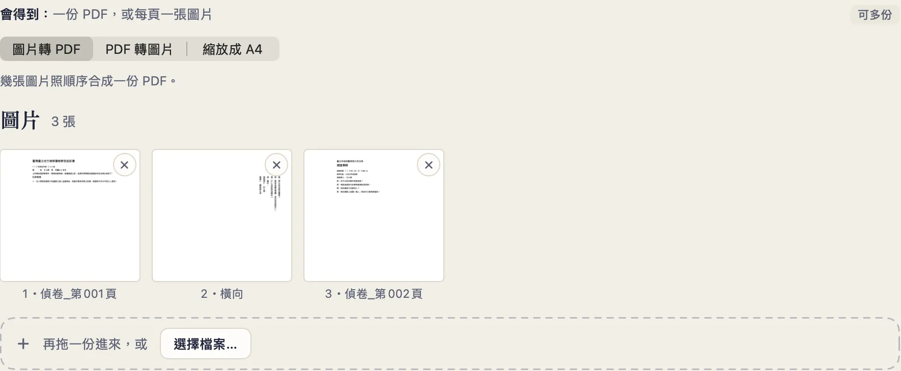
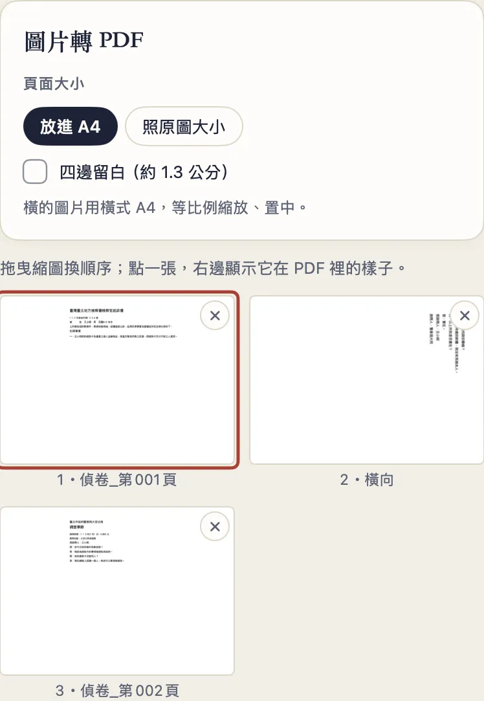
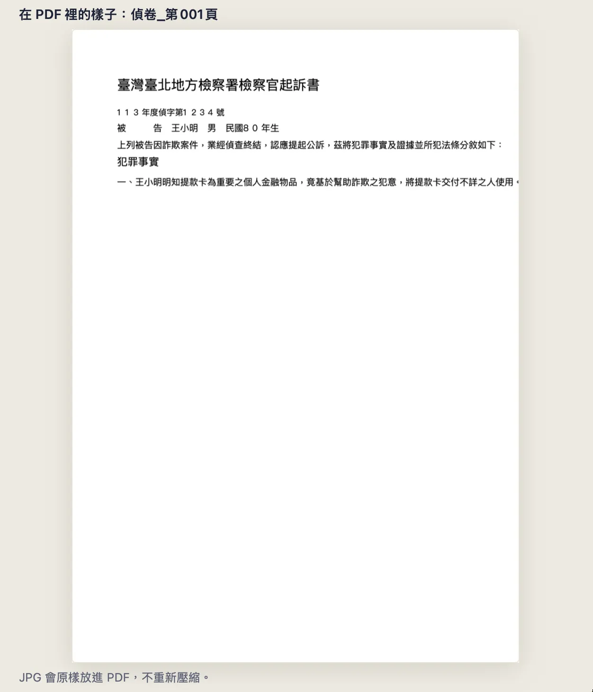
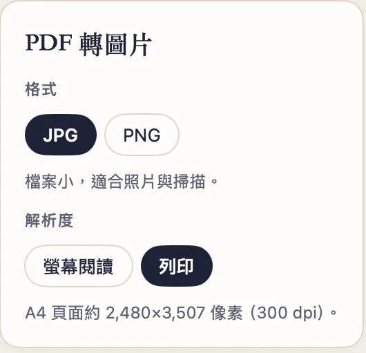
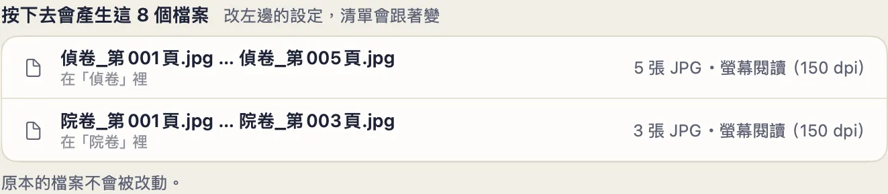
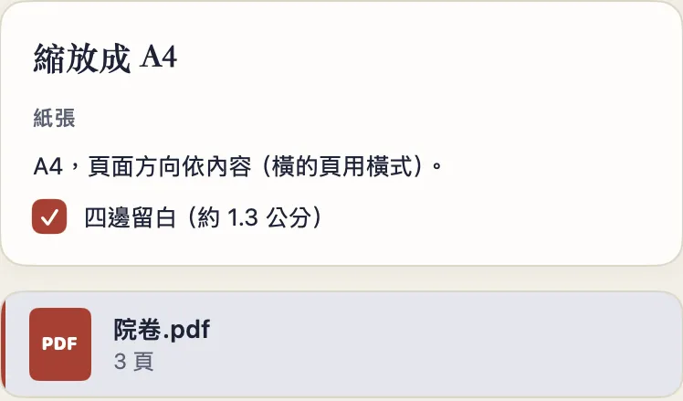
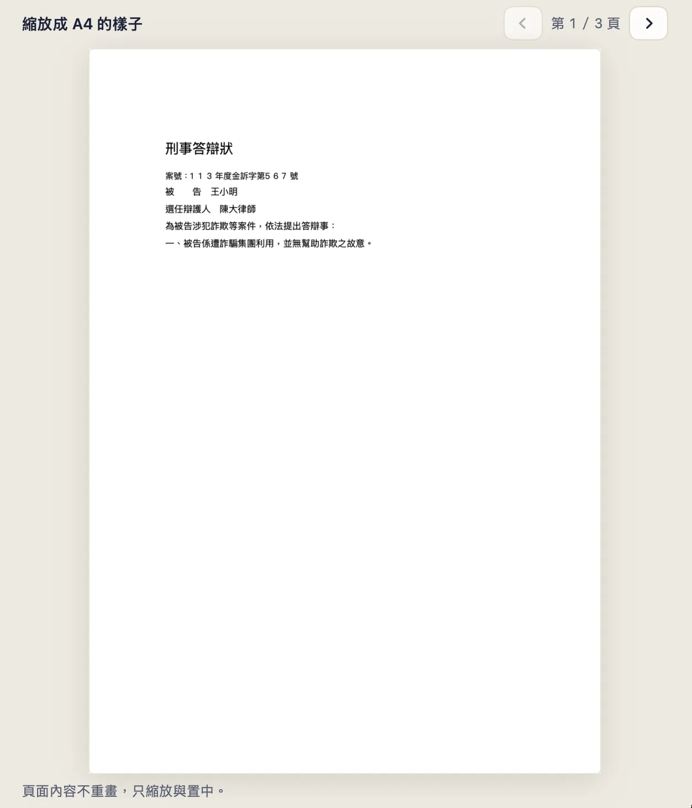
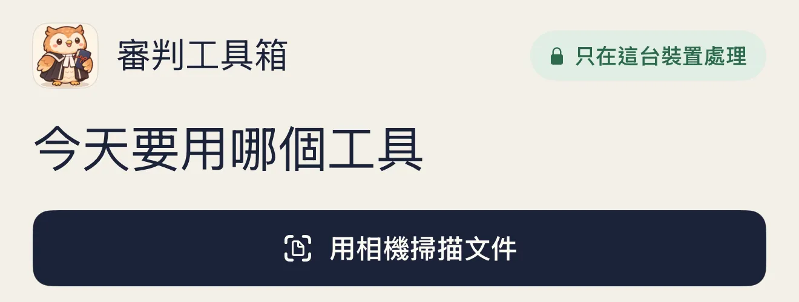
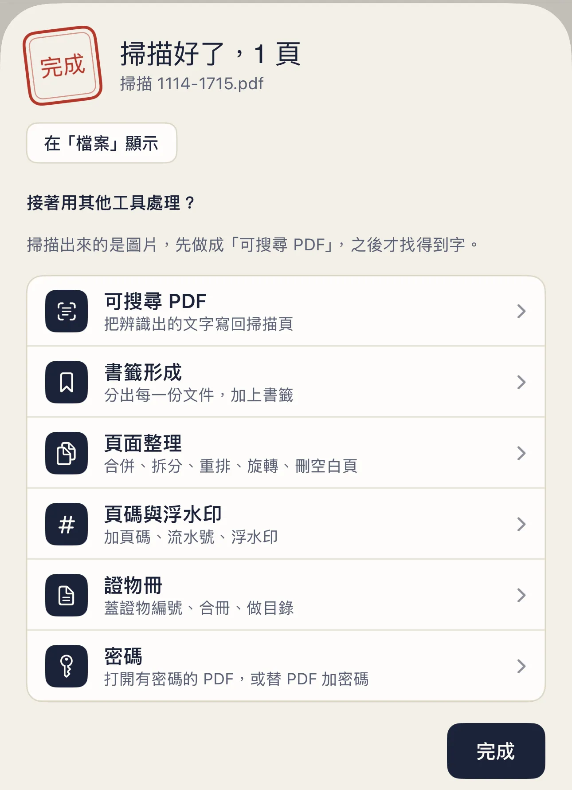

圖片轉 PDF、PDF 轉圖片：圖片與掃描教學
當事人傳來的照片要附進書狀、書狀的某幾頁要貼進簡報、卷裡夾著大小不一的頁面想統一印成 A4，這些零碎的轉換都在「圖片與掃描」。在 iPhone・iPad 上，也可以直接用相機把紙本掃成 PDF。
這個工具做什麼
「圖片與掃描」在首頁的「頁面」那一組，有三種做法：
- 圖片轉 PDF：幾張圖片照順序合成一份 PDF。
- PDF 轉圖片：PDF 的每一頁存成一張圖片。
- 縮放成 A4：大小不一的頁面，等比例縮放成 A4（內容不重畫）。
在 iPhone・iPad 上另外可以用相機掃描文件。原本的檔案不會被改動。
第一步：選做法、放入檔案
從首頁或側邊欄點「圖片與掃描」。上方先選要做哪一種，再把圖片或 PDF 拖進來，或按「選擇檔案…」。

- 圖片轉 PDF：JPG、PNG、HEIC 都可以，可以一次放好幾張。放錯的按縮圖右上的 ✕ 拿掉。
- PDF 轉圖片、縮放成 A4：放 PDF，可以一次放好幾份。有開啟密碼的會先問密碼。
- 在「圖片轉 PDF」時拖進 PDF，會自動切到「PDF 轉圖片」。
按右上角的「下一步：設定與預覽」。
圖片轉 PDF
左邊是設定與圖片的縮圖，右邊是點到的那一張放進 PDF 的樣子。改設定，右邊跟著變。
設定與縮圖

在 PDF 裡的樣子

- 頁面大小：「放進 A4」每張放進一頁 A4，等比例縮放、置中，橫的圖片用橫式 A4，小的圖片也會放大到 A4；可以勾「四邊留白（約 1.3 公分）」。「照原圖大小」依圖片記錄的解析度決定頁面大小（沒有記錄當 72 dpi）。
- 順序：拖曳縮圖換順序，PDF 的頁序就是縮圖的順序。
- JPG 會原樣放進 PDF，不重新壓縮，畫質不會變差。PNG 等不失真的格式也不會變差；HEIC 會轉成 JPG 放進去。
PDF 轉圖片
選「格式」與「解析度」：

- 格式：JPG 檔案小，適合照片與掃描；PNG 不失真，檔案比較大。
- 解析度：「螢幕閱讀」是 150 dpi（A4 一頁約 1,240×1,754 像素），「列印」是 300 dpi（約 2,480×3,507 像素）。要貼進簡報或傳訊息用螢幕閱讀就夠；要印出來或放大看小字，選列印。
右邊可以翻頁看 PDF 的頁面。到輸出這一步，每份 PDF 合成一列，寫著第一張與最後一張的檔名、幾張、格式與解析度。

縮放成 A4
卷裡有 B4、Letter 或尺寸奇怪的頁面，想統一成 A4 列印或合冊時用。頁面方向依內容，橫的頁用橫式 A4；可以勾「四邊留白（約 1.3 公分）」。
設定

縮放成 A4 的樣子

頁面內容不重畫，只縮放與置中，所以原本的文字還能搜尋、複製。右邊可以翻頁，每一頁都看得到縮放後的樣子。
輸出的檔案
確認好了，按右上角的「開始輸出 N 個檔案」。
- 圖片轉 PDF：一份 PDF。一張圖時檔名是圖片的名稱；好幾張時是「第一張的名稱_等3張.pdf」。
- PDF 轉圖片：每份 PDF 一個資料夾，每一頁一張，檔名是「檔名_第001頁.jpg」。
- 縮放成 A4：「原檔名_A4.pdf」，每份一個。
檔案存在「下載項目 › 審判工具箱」底下這次新開的資料夾，名稱是第一個檔案的名稱加上做法，例如「偵卷 PDF 轉圖片」。
iPhone・iPad：用相機掃描文件
iPhone 的首頁最上面、iPad 首頁的右上角，有「用相機掃描文件」。「圖片與掃描」第一步選「圖片轉 PDF」時，也有同一個按鈕。

- 第一次按會問能不能用相機，說明寫著「用相機掃描紙本文件，轉成 PDF。影像只留在這台裝置。」按「允許」。
- 出現系統的掃描畫面，對準紙本拍下。系統會自動找紙張邊緣、拉正；可以連續拍好幾頁，全部拍完再結束掃描畫面。
- App 把拍好的頁存成一份 PDF（每頁放進 A4），然後顯示「掃描好了，N 頁」。

下面問「接著用其他工具處理？」，點一個就把這份 PDF 放進那個工具：可搜尋 PDF、書籤形成、頁面整理、頁碼與浮水印、證物冊、密碼。掃描出來的是圖片，先做成「可搜尋 PDF」，之後才找得到字。不用接著處理，按「完成」。
掃好的 PDF 存在「檔案」App 的「我的 iPhone（iPad）› 審判工具箱」裡的「掃描 月日-時分」資料夾，也可以按「在『檔案』顯示」打開。拍下的影像只用來做成 PDF。更多 iPhone・iPad 的操作在在 iPhone・iPad 上使用。
Mac 沒有相機掃描，要掃紙本請用掃描器存成 PDF 或圖片，再放進來。
做不到的事／要注意
常見問題
照片轉成 PDF 會變模糊嗎？
JPG 會原樣放進 PDF，不重新壓縮；PNG 用不失真的方式放進去。HEIC 會轉成 JPG。選「放進 A4」時，頁面大小是 A4，但圖片本身的像素不變。
PDF 轉圖片要選哪個解析度？
貼進簡報、傳訊息用「螢幕閱讀」（150 dpi）；要列印或放大看小字選「列印」（300 dpi），檔案會比較大。
Mac 版可以用相機掃描嗎？
不行，相機掃描只有 iPhone・iPad。Mac 上請把掃描器存成的 PDF 或圖片放進來。